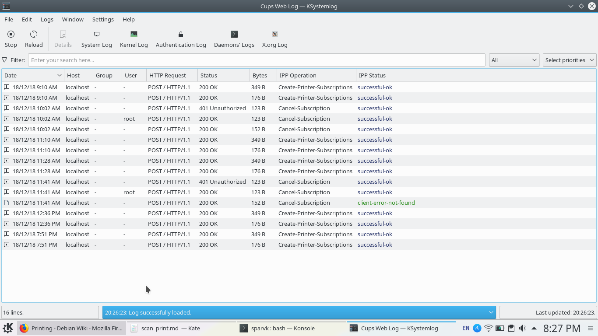

sparvk enabled operating system provides a generic interface to printers through the cups package. The goal of this package is to provide a unified access to a number of printers. CUPS runs as a server daemon in the background and automatically starts when your system boots.
By default cups package does not come installed in sparvk pod. You can install it by opening a terminal window and
- Switching to a root user by typing
suand pressing enter - Giving your password
- typing
apt-get install cups
CUPS provides command line interface to work with although every sparvk pod comes with a UI to manage the CUPS daemon behind the scenes. In practice you should never have to deal with the command line interface. Once you've installed CUPS you can configure the printer settings using the print settings interface.

The print settings on sparvk pod allows you to set
- Access control on printers giving rights to a particular set of users who can print
- A default page size to print on. Output resolution as well as attaching banners on each printed object.
- Creating new printers. Grouping printers together into classes so as schedule more effective print jobs across a section of printers.
A lot of other configuration options are available that allow you to fine tune your printers down to the specifics. For any printer that you print the application there's a very handy real time display of print queue that you can access by
- Going to the print settings application
- Right clicking the printer and selecting the view "View print queue" option.

The print queue allows you to see a list of all the pages that are about to be printed and give you a chance to perform pre printing operations or maybe retry the jobs that have failed.
More configuration options are documented on the CUPS manual page. For most general taks however CUPS is easy enough to administer that you would have no need to refer to the documentation. In case you do need help it is available.
For troubleshooting CUPS maintains a very detailed log of all its operations. You can check the logs either directly from /var/log/cups/ directory or from a log viewing application like Ksystem log (recommended). CUPS developers also maintain a mailing list that you can subscribe to and submit any problems that you encounter.

Scanning
Scanning requires use of a third party app. Most scanners come with their own driver software that is usually not supported on linux systems. But debian has packages that allow you to connect a scanner via a usb port and save the scanned file as a JPEG, PNG, BMP, PDF or anyother file format that you prefer.
We'll use the skanlite package to scan our files. Skanlite is a very simple application that simply scans your documents and save it in a format you want. This is as straightforward as you can get. To install skanlite on your sparvk pod open up a terminal and
- Siwtch to the root users by typing
suand hitting enter - Providing your password at the command line prompt
- Typing
apt-get install skanliteand pressing enter.
Once you've got skanlite installed its time for some action. Open the application from the applications menu or from the quick search bar (alt+space). When it starts skanlite will ask you to choose your scanner. From there on its simply a matter of clicking the scan button to scan your document.

Once a document has been scanned it will be saved on your local filesystem. sparvk pods provide you with an extensive toolset managing photos. Make sure to use them!
If you're a printer or a scanner manufacturer we'd love to work with
you to provide an excellent print experience on sparvk enabled operating systems.
Please do get in touch. Alternatively if you've independently released debian based packages
that we are not aware of kindly let us know and we'll link to them
in this article.